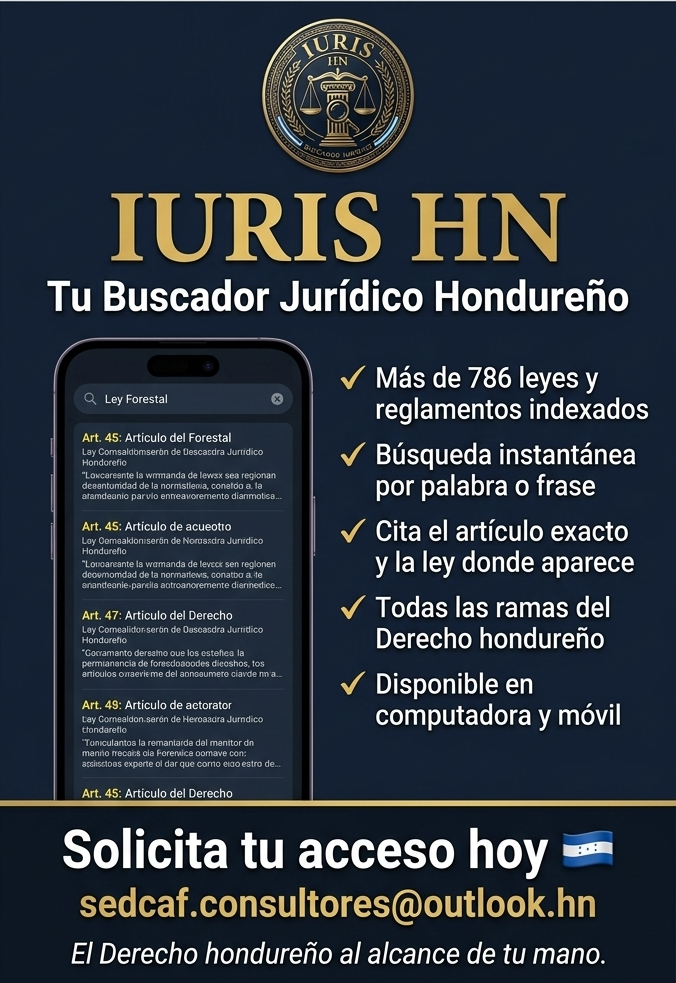

Plataforma inteligente de búsqueda y análisis de legislación nacional. Diseñado para simplificar el acceso a normas, citar con precisión técnica y obtener explicaciones claras potenciadas por Inteligencia Artificial.
"Se prohíbe terminantemente el cambio de uso del suelo forestal..."
Este artículo restringe de forma absoluta el cambio de uso del suelo, protegiendo las cuencas hidrográficas de Honduras.
IURIS HN combina precisión legal y agilidad digital para optimizar el trabajo técnico y judicial.
Acceso inmediato a un compendio exhaustivo y actualizado, priorizando la normativa forestal y ambiental de Honduras.
Motor de indexación optimizado que encuentra palabras clave, artículos o frases en milisegundos con total precisión.
Genera la cita formal exacta de la ley y el artículo seleccionado, listo para anexar en dictámenes técnicos o demandas.
Consulta la normativa en la oficina con la versión de escritorio o directamente en el campo a través de tu dispositivo móvil.
Haz clic en cualquiera de las consultas predefinidas abajo para ver cómo nuestro motor indexa y el asistente IA analiza los resultados al instante.
"Se prohíbe el cambio de uso de suelos en áreas forestales públicas o privadas, salvo proyectos de interés público nacional aprobados por el ICF..."
Este artículo establece una restricción absoluta sobre la conversión de uso de suelos forestales para proteger la biodiversidad de Honduras. Toda modificación no autorizada por el ICF en áreas declaradas forestales anula las licencias y configura infracciones de carácter penal ambiental.

IURIS HN nació con un objetivo claro: apoyar a los fiscales de la Fiscalía Especial del Medio Ambiente (FEMA), jueces y analistas de campo en la toma rápida y exacta de decisiones basadas en la ley.
Centraliza la legislación de agua, vida silvestre, cambio climático y minería en un solo lugar indexado, permitiendo extraer referencias y fundamentar dictámenes en segundos.
"El Derecho ambiental hondureño al alcance de tu mano, permitiendo una gestión técnica sin demoras."— Dirección de Desarrollo IURIS HN
La herramienta está disponible para profesionales legales, técnicos ambientales, fiscales y dependencias estatales de Honduras.
Escríbenos directamente a nuestro correo de soporte y licencias: